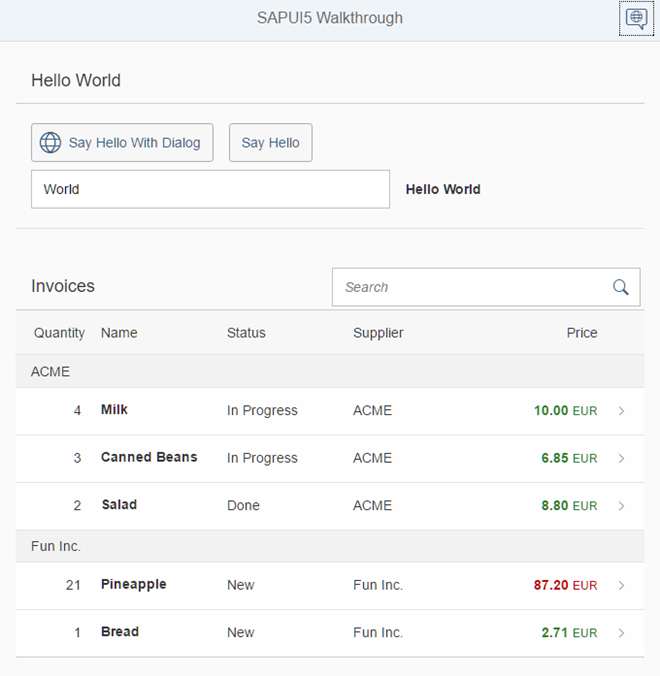

Walkthrough
In this tutorial we will introduce you to all major development paradigms of OpenUI5.
We first introduce you to the basic development paradigms like Model-View-Controller and establish a best-practice structure of our application. We'll do this along the classic example of “Hello World” and start a new app from scratch. Next, we'll introduce the fundamental data binding concepts of OpenUI5 and extend our app to show a list of invoices. We'll continue to add more functionality by adding navigation, extending controls, and making our app responsive.Finally we'll look at the testing features and the built-in support tools of OpenUI5.
Preview
